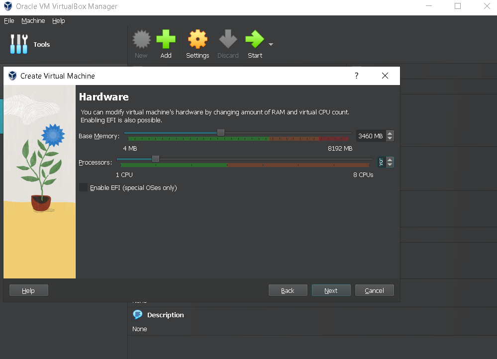
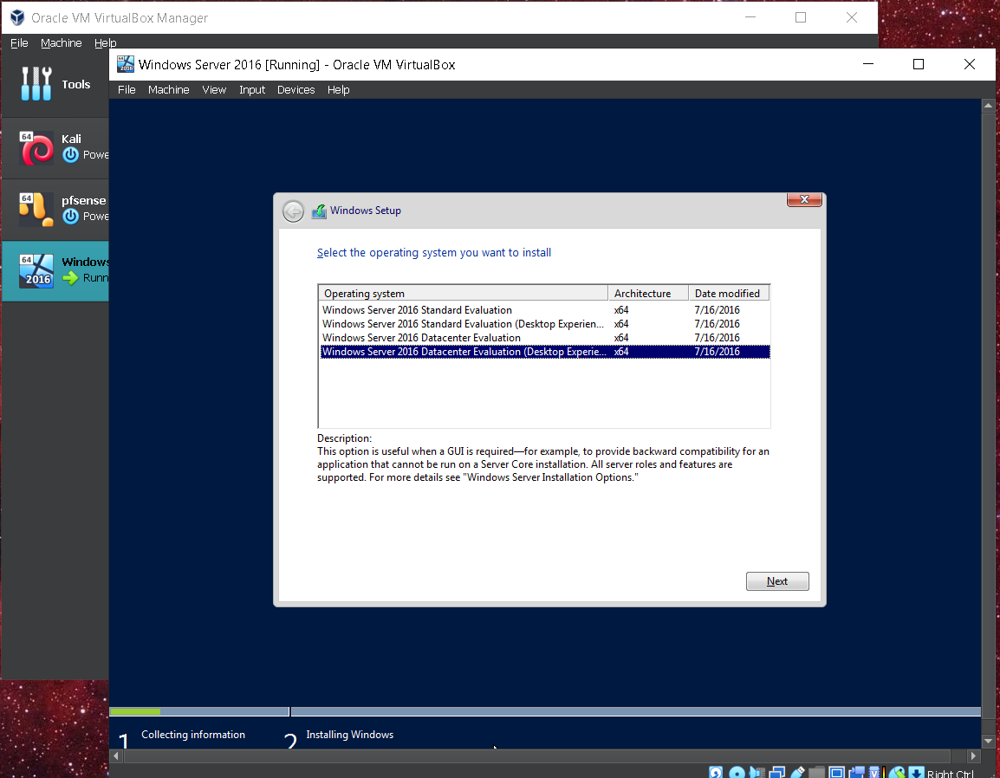

The following demonstrates installing Windows Server 2016 as VM using Oracle VirtualBox. Active Direcotry starts with a Windows server and setting up Active Directory with the AD DS server role as the origion of the Windows domain.
Windows Server is a server-grade operating system developed by Microsoft, built specifically to manage and support enterprise-level networks, applications, and services. Unlike regular desktop versions of Windows, Windows Server is optimized for handling infrastructure roles such as file storage, identity management, virtualization, web hosting, and network control.
It acts as the central brain of many IT environments — running services like Active Directory, DNS, DHCP, Group Policy, and Hyper-V to keep an organization's digital operations secure, scalable, and efficient.
Whether managing a small office network or a global enterprise infrastructure, Windows Server serves as the backbone — delivering reliability, centralized control, and enterprise-grade performance.
Oracle VirtualBox is a powerful, free, and open-source virtualization platform that allows you to run multiple operating systems as virtual machines (VMs) on a single physical computer. In the context of a Windows Server domain lab, VirtualBox provides an ideal environment to simulate enterprise setups — including Active Directory, Group Policy, DNS, and DHCP — without needing dedicated hardware.
It’s perfect for building isolated test environments where you can configure domain controllers, join client machines, and safely experiment with domain-level administrative tasks and policy management — all from one host machine.

In this example, I'm going to allocate 3460MB of base memory and 2 Processors.
In this example, I'm going to install Windows Server 2016 Desktop Experience
This demonstration included adding and setting up a new virtual machine in Oracle VirtualBox and installing Windows Server 2016 on the new VM. From here, I'll walk through how to turn this installation into a domain controller to set up Active Directory.
Back to Home